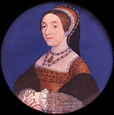

VUA ra lệnh xử chém Thủ tướng Cromwell ngày 28. 7.1540 và ngay hôm ấy vua cưới luôn cô thứ năm: Catherine Howard, 18 tuổi, sau khi mời hoàng hậu Anne de Clève, nàng Công Chúa Đức bạc phước vô duyên, phải đi xa thủ đô Anh không bao giờ trở lại.

Catherine Howard đẹp hơn Anne de Clève thùy mị và duyên dáng hơn, ngây thơ dịu hiền, tính nết không chê vào đâu được. Nàng là trưởng nữ một gia đình thế phiệt có uy tín và thế lực trong Triều đình và được tuyển chọn vào Cung để hầu Hoàng hậu Anne de Clève. Lần đầu tiên vua Henri VIII trông thấy Catherine trong một dạ hội, nhà vua mê ngay và đêm ấy Catherine cũng ngoan ngoãn tuân theo mệnh lệnh của Vua, rất dễ dàng, không chống cự. Sự thật Catherine không có tham vọng làm Hoàng hậu. Được vinh hạnh làm tình nhân của vua, nàng cũng đã sung sướng rồi. Nhưng sau một đêm đắm đuối bên hương vị ngào ngạt của cô gái đương tơ, nhà vua đã say mê nàng, và nhất định tôn nàng lên ngôi Hoàng hậu. Vua đê mê khẽ bảo với quần thần: “ Nàng là một hoa hồng không có gai”.
Sau đêm ấy, vua tống cổ hoàng hậu Anne de Clève, người con gái xấu xí đã làm cho vua thất vọng, và đem chặt đầu Thủ tướng Cromwell, người đã lừa gạt vua, rồi làm lễ thành hôn với Catherine.
Lúc bấy giờ, tóc vua đã bạc, bụng vua đã phệ, chân vua bị ung thư, vua quyết định Catherine sẽ là người vợ cuối cùng và chắc rằng Hoàng hậu thứ năm sẽ là người bạn lòng yêu quý nhất của Vua trong những ngày tàn tạ.
Nhưng dân chúng Anh đã gọi Henri VIII là “ Râu Xanh” theo một truyện tích thuở xưa của Pháp như sau đây. Có một hung chúa đã chặt cổ liên tiếp sáu người vợ sau khi đã thỏa mãn dục tình với mỗi người. Người ta gọi tên chàng là Râu Xann (Barbe Bleue) vì chàng có một bộ râu xanh, và mặt chàng hung ác ghê tởm. Cắt cổ xong sáu người vợ, chàng treo sáu xác chết còn đẫm máu trong một căn buồng kín trong lâu đài của chàng. Đến người vợ thứ bảy, sau khi thỏa mãn dục tình, chàng trao cho nàng chìa khóa căn buồng và bảo: “Tao cấm mày không được mở cửa căn buồng bí mật của tao. Nếu mày mở tao sẽ giết mày.” Xong rồi chàng đi vào rừng. Chàng vừa ra khỏi nhà, thì người vợ lấy chìa khóa mở cửa buồng xem có gì ở trong. Vừa trông thấy sáu xác chết đàn bà treo lủng lẳng đầy máu và không có đầu, nàng kinh hoảng đánh rơi chìa khóa xuống một vũng máu và té xỉu. Nàng vội vàng ngồi dậy chạy ra ngoài và khóa cửa buồng lại nhưng máu dính vào chìa khóa nàng rửa mãi không sạch. Nàng biết thế nào cũng sẽ bị chúa Râu Xanh giết, liền bảo cô em gái của nàng là Anne leo lên cái tháp cao ngó xuống cánh đồng mênh mông xem hai người anh của nàng đã đến hay chưa. Vì nàng biết hôm ấy hai người anh của nàng, hai chàng kỵ mã làm Ngự lâm pháo thủ, sẽ đến thăm nàng. Nhưng Anne đứng trên tháp cao nhìn tứ phía chẳng thấy bóng hai người anh đến. Chốc chốc nàng hỏi: “Anne ơi, em ơi, em không thấy có gì đến ư?” thì Anne đáp: “Em chỉ thấy nắng bụi mịt mù và cỏ xanh um”. Chàng Râu Xanh chợt về, thấy chìa khóa dính máu liền hăm he giết vợ. Nhưng cùng lúc ấy hai người anh của nàng cũng phi ngựa đến nơi. Chàng Râu Xanh cầm gươm đang sắp chặt cổ vợ thì hai chàng kỵ mã nhảy xổ tới chém đầu hung chúa...
Ấy là chuyện cổ tích Pháp. Dân chúng Anh gọi vua Henri VIII của họ là “Râu Xanh” kể cũng không oan. Vì ông đã chặt đầu một người vợ, hai người bị đuổi đi, một người chết yểu, rồi đến người vợ thứ năm, Catherine Howard, cũng sẽ bị chặt đầu, sau 15 tháng sống chung tràn trề hạnh phúc. Trong tuần trăng mật ngắn ngủi ấy, nhà vua cưng Catherine hơn những cô vợ trước. Có nàng, vua tự thấy trẻ lại, và đêm ngày truy hoan trong cuộc tình duyên đắm say thơ mộng. Cho đến đỗi nhà vua bỏ bê cả việc nước, không them đoái nhìn tới mặc dầu trong lúc ấy Charles Quint, Hoàng đế Đức và François I, vua nước Pháp, đang tranh giành nhau làm bá chủ Âu châu. Tân hoàng hâu nước Anh được vua đưa đi thăm các tỉnh miền Bắc, với một đoàn tùy tùng trên bốn ngàn người, có cả bộ binh và pháo binh. Vì yêu mê Catherine, Henri VIII muốn nàng được tôn trọng đặc biệt và tất cả các cuộc đón rước vua và hoàng hậu đều được tổ chức tưng bừng trọng thể.
15 tháng! Vâng, tất cả giấc mộng huy hoàng ấy chỉ kéo dài được 15 tháng thôi. Bỗng một hôm, một kẻ nịnh thần thù ghét Catherine tâu với vua rằng Catherine trước kia chỉ là một cô gái lăng loàn, thường chung chạ với nhiều bọn trai, và nhất là với người anh họ, Tom Culpeper, hiện làm quan cận vệ của Vua.
Giám mục Thiên chúa giáo của Giáo Hội Anh quốc là Cramner, được phe thù địch ganh ghét Catherine trao cho nhiệm vụ tố cáo các “tội ác” của Catherine: nào là lúc 16 tuổi nàng đã “mèo chuột” với một nhạc sư tên là Manox, nào là Catherine có bùa yêu làm mê hoặc nhà vua, nàng là một con mẹ phù thủy ghê tởm. v.v...
Nghe những lời buộc tội nặng nề với những “bằng chứng” phần nhiều, là bịa đặt, hoặc thêu dệt, vua Henri VIII nổi giận đùng đùng la hét lên: “Thế thì nó là con chó! Con chó cái đi kiếm đực! Trẫm sẽ tự tay trẫm chặt cổ nó. Trẫm truyền lịnh hãy bắt con đĩ ấy với tất cả mấy thằng tình của nó, đem ra tra tấn cho cực kỳ nghiêm khắc, rồi báo tin cho trẫm biết.”
Henri VIII chỉ vì mù quáng nghe lời những nịnh thần và những kẻ vì quyền lợi cá nhân, bè đảng, mà tố cáo Catherine, cũng vì ghen vô cớ với cô vợ trẻ đẹp, mà ra lệnh cho tòa án kết nàng vào tội tử hình.
Catherine Howard, Hoàng hậu Anh quốc, vợ thứ năm của Anh hoàng Henri VIII, bị lên đoạn đầu đài sau một phiên tòa theo lịnh vua. Nàng vừa đặt đầu trên miếng gỗ thì một lão đao thủ phủ mặc quần áo đỏ cầm đao chặt xuống một lát, đầu nàng bay xuốnc đất, máu tóe lên trời...
Nàng chưa được 20 tuổi.